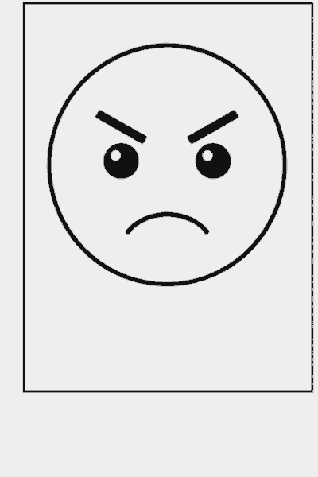

Misericordia di AricciaConfraternita di Misericordia di Ariccia ODV
Bambini · 4-8 anni
Le emozioni grandi
4-8 anni · riconoscere e dare un nome😊 A volte le emozioni sono "grandi" e fanno paura: arrivano forti e veloci. Riconoscerle e dare loro un nome può aiutare a non farsi travolgere. Cerchia la faccia che senti adesso. Anche più di una.

😊 Felice
Mi sento leggero, mi viene da ridere, ho voglia di stare con altri.

😢 Triste
Mi viene da piangere, mi sento pesante, vorrei stare in silenzio.

😡 Arrabbiato
Sento caldo, voglio urlare o tirare un calcio, mi viene da scattare.

😨 Impaurito
Il cuore batte forte, tremo, vorrei nascondermi o scappare.
💡 Tutte le emozioni sono giuste. Anche quelle grandi e difficili fanno parte di te. Sentire rabbia va bene, fare male a qualcuno no. Quando senti un'emozione grande puoi provare a respirare con la pancia (vedi la scheda sulla respirazione) e a parlarne con un adulto di fiducia.